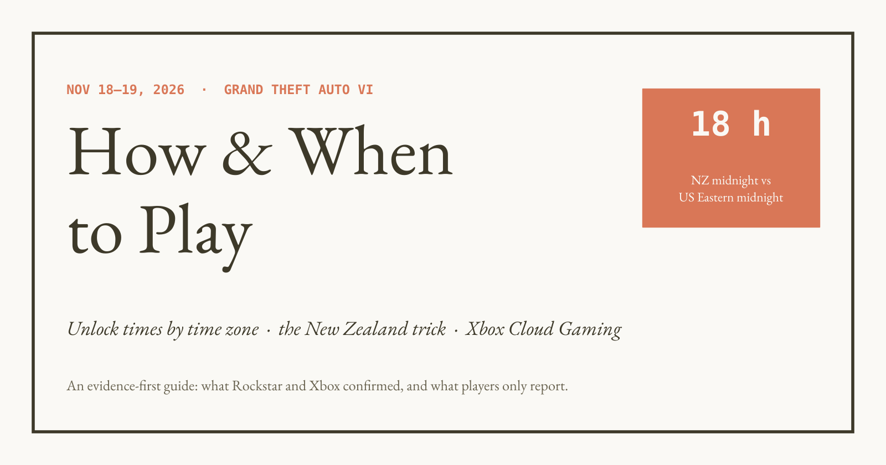
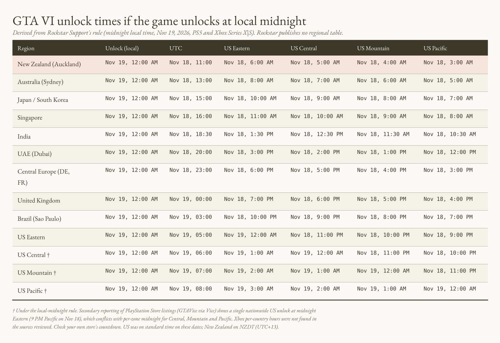
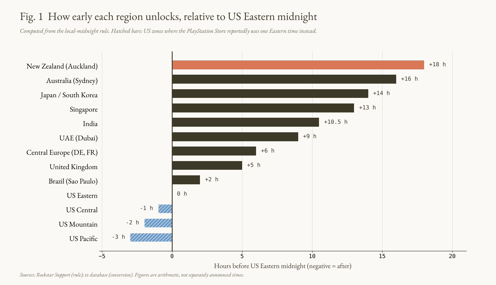
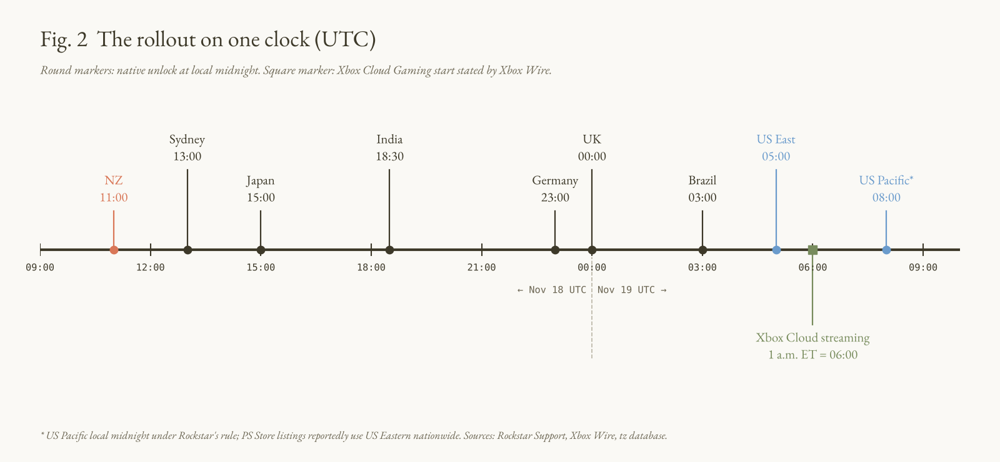
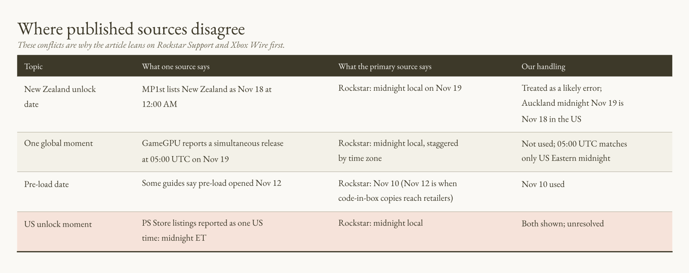
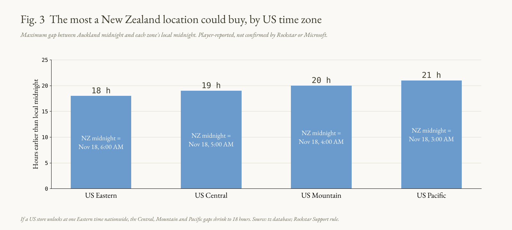
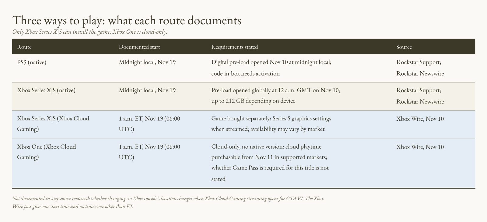
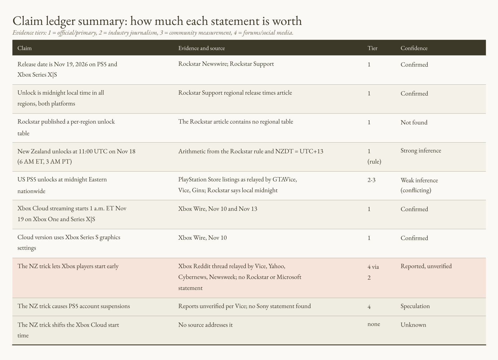

The short version
- CONFIRMED Rockstar says the game releases at midnight local time on November 19, 2026, in all regions, on PS5 and Xbox Series X|S.
- CONFIRMED Xbox says streaming through Xbox Cloud Gaming begins at 1 a.m. ET on November 19 on Xbox One and Xbox Series X|S, using Xbox Series S graphics settings. The game is bought separately.
- REPORTED Xbox players say that setting the console's location to New Zealand and restarting let them start early. No confirmation from Rockstar or Microsoft was found.
- NOT ESTABLISHED Whether the New Zealand trick affects Xbox Cloud Gaming, and exactly when each US time zone unlocks.
1. Introduction
Rockstar has published one rule about launch timing. Many guides have turned that rule into schedules, shortcuts and promises. Three questions recur in launch-week coverage: exact unlock times by time zone, the "New Zealand trick" for early access, and whether an older Xbox can stream the game.
The central question here is narrow: when can a player in a given place start Grand Theft Auto VI, and which of the popular routes are documented rather than only reported? Each answer below is labeled by how well the evidence supports it.
2. Context
Rockstar's Newswire shows the release date moving to May 26, 2026 and then to Thursday, November 19, 2026. The game is on PlayStation 5 and Xbox Series X|S. Rockstar has not announced a PC release date; a window in early 2027 circulates in reporting that attributes it to unnamed sources, so it is not used here.
Digital pre-loading opened on November 10: at midnight local time on PS5, and globally at 12 a.m. GMT on Xbox Series X|S. Rockstar says the pre-load file needs up to 212 GB depending on the device, and code-in-box copies were due at retailers from November 12. Pre-loading installs files; the game stays locked until its unlock time.
The "New Zealand trick" is a time-zone effect. When a game unlocks at midnight in each region, New Zealand reaches midnight before the Americas or Europe. On Xbox, players have long changed the console's location setting to exploit that, and trade outlets described the same practice for other staggered launches, including Forza Horizon 6 in May 2026 and Call of Duty: Black Ops 7. Midnight-local release is a common industry pattern. None of the sources reviewed says Rockstar chose it to enable, or to prevent, the trick.
3. Evidence
3.1 What the primary sources say
Rockstar's support article on regional release times states that the game releases at midnight local time on November 19, 2026, in all regions, for both PlayStation 5 and Xbox Series X|S. The same article has no regional table and says nothing about changing a console's region or account. The per-region schedules in the sources reviewed are therefore derived, either by arithmetic from that rule or from storefront listings that outlets have relayed.
That is the reason this article computes its times instead of copying them. Table 1 applies the rule to each region using the standard time-zone database. New Zealand is on daylight time (UTC+13) in November; the United States had returned to standard time.



3.2 What the schedule means on November 18
If the local-midnight rule holds for each US zone, the unlock rolls westward over three hours. On a Pacific clock that is 9 p.m. for Eastern players, 10 p.m. for Central, 11 p.m. for Mountain and midnight for Pacific, all on the night of November 18 into 19. If instead a store uses one Eastern moment for the whole country, every US player unlocks together at midnight Eastern, which is 11 p.m. Central, 10 p.m. Mountain and 9 p.m. Pacific. Section 3.3 explains why both readings are live.
3.3 The US question
Rockstar's wording points to a per-zone midnight. But reporting on PlayStation Store listings, traced to the GTAVice fan site and repeated by Vice and others, describes one nationwide US unlock at midnight Eastern. Those listings are secondary reports of a storefront, and one outlet notes that none of the listed times came from a Rockstar announcement. The sources reviewed do not publish an Xbox hour for the United States at all.
The available sources document both readings but do not establish which one the stores use. The practical answer is to read the countdown on your own store page, which is where the actual unlock is enforced.

4. Case studies
Case study 1: The New Zealand trick on Xbox
Verified mechanics
Xbox's own support pages confirm that the console has a Location setting under Settings, System, Language & location. Rockstar confirms the midnight-local rule. Auckland's midnight (11:00 UTC on November 18) is 6 a.m. Eastern and 3 a.m. Pacific that day. Those three facts are the whole documented basis of the trick.
Developer and platform statements
Rockstar's regional-times article does not mention region changes. Yahoo Tech says Rockstar and Microsoft have not commented, and Vice's report on the trick cites no statement from Rockstar, Microsoft or Sony about it. No confirmation from either company was found.
Design analysis
REPORTED Players on an Xbox community forum said the game launched after they switched the console location to New Zealand and restarted. Vice relays this for US-based Xbox Series X|S players; Cybernews, Newsweek and Yahoo Tech report the same behavior. Reported steps are to own and install the game, set Location to New Zealand, restart, and launch after Auckland midnight; Cybernews says the clock can be left alone. The sources do not state how many players reported success, and at least two of the outlets cite Xbox forum threads, so this may be one body of evidence repeated, not several independent tests.
The claim is also consistent with how outlets described the trick for earlier staggered Xbox launches. That is supporting context, not proof that it behaves the same way for this game.

Limitations
No hands-on test was possible for this article. The forum evidence is Tier 4 relayed through Tier 2 outlets. The Yahoo Tech article could not be retrieved in full, so it is used only as corroboration of what the others report.
Counterarguments
Risk claims are weaker than the success claims. Xbox support says that when an account's region and a player's physical location do not match, they may get a region-block error or trouble making purchases; that page is written for people who move, so its bearing on a console-location change is an interpretation. Xbox's Community Standards describe masking location to exploit pricing or regional purchase restrictions as fraud, but that language is about pricing and purchases, and the sources reviewed do not show it being applied to a release-time workaround. Newsweek characterizes players as risking their accounts. Vice treats reports of PlayStation suspensions as unverified, found no Sony statement about this trick, and notes that Sony's terms require an account registered in your country of residence. REPORTED for success; UNVERIFIED for bans.
Case study 2: Xbox One through Xbox Cloud Gaming
Verified mechanics
Xbox Wire (November 10, repeated November 13) states that Grand Theft Auto VI streams on Xbox One and Xbox Series X|S through Xbox Cloud Gaming starting 1 a.m. ET on November 19. Xbox One is cloud-only; Xbox Series X|S can also install and play natively. The game must be purchased separately. From November 11, players in supported markets can buy cloud playtime to stream supported games without a Game Pass subscription. The streamed version uses Xbox Series S graphics settings, and Xbox says availability may vary by market and device.
Developer and platform statements
Rockstar's Newswire post on November 10 also says the game will be available through Xbox Cloud Gaming on Xbox Series X|S and, per coverage of that post, Xbox One, with Series S settings. Coverage of that post adds that network speed and other conditions can affect performance. The Xbox Wire page does not mention PC or mobile; several outlets report that PC and mobile streaming are not offered, but that restriction was not found in the primary pages retrieved.
Design analysis
This is an interpretation built from two confirmed facts, not a published schedule. Cloud streaming opens at 06:00 UTC. If Xbox's native unlock follows Rockstar's per-zone local-midnight rule, a Series X|S owner on the Pacific coast has native access at 08:00 UTC, two hours after the cloud opens, and a Mountain-zone owner one hour after. An Eastern owner's native unlock (05:00 UTC) comes one hour before the cloud. For an Xbox One owner there is no native route, so 1 a.m. ET is the documented start: 12 a.m. Central, 11 p.m. Mountain and 10 p.m. Pacific on November 18.

Limitations
The Xbox Wire page does not say whether Game Pass is required for this specific title, names no supported markets, and gives no time zone other than ET. Whether Xbox's native unlock follows per-zone midnight is itself unpublished.
Counterarguments
Two hypotheses explain the single cloud start time. Hypothesis A: Xbox opens streaming globally at one moment (06:00 UTC), in which case a New Zealand location would change nothing for cloud play. Hypothesis B: cloud availability follows the same store-region logic as native unlocking, in which case a location change might matter. The available sources document the start time but do not establish which hypothesis is correct, so this article does not pick one.
5. Counterarguments and alternative interpretations
The strongest opposing viewpoint
The strongest case against acting on this guide is that the head start is hours, the documented basis is thin, and waiting costs nothing. Under the local-midnight rule, players in the major US and European zones get the game within about a day of New Zealand, and the only official statements are about midnight local time and 1 a.m. ET.
Supporting evidence for that view
No Rockstar or Microsoft page endorses the trick. The success reports come from a forum thread of unknown size. The ban reports are unverified but unrefuted, and Xbox's own support pages warn about location mismatches.
Weaknesses in this article's argument
- The local-midnight schedule applies to Xbox only if Xbox follows Rockstar's stated rule; no Xbox per-country hour was found.
- The success reports could reflect other causes, such as a store that unlocked early in particular regions, though the sources reviewed describe the New Zealand location as the common factor.
- Absence of a Rockstar mention of region changes is not evidence that the trick is permitted or blocked.
- The US dual reading (per-zone versus Eastern) is unresolved.
Unresolved questions
- Does a New Zealand location change when Xbox Cloud Gaming opens?
- Does any platform act on accounts that change location for launch timing, and how often?
- Is the US unlock one moment or four?
6. Limitations
- Timing. This is a snapshot from about 20:00 UTC on November 18, with reports still arriving. Later reports may confirm or overturn the New Zealand findings.
- No hands-on test. No console was available; success reports are secondhand.
- Retrieval gaps. The Rockstar "Pre-Load Now" page returned only its metadata, so its claims about Series S settings and Xbox One come through Xbox Wire and secondary coverage. The Yahoo Tech article failed to load in full.
- Scope. Four US zones are shown; Alaska and Hawaii are not. All conversions assume New Zealand on UTC+13 and the US on standard time.
- Tier mix. The strongest claims rest on two Tier 1 sources (Rockstar Support and Xbox Wire). The New Zealand findings rest on Tier 4 reports relayed by Tier 2 outlets.
7. Conclusion
What we know
The game releases at midnight local time on November 19, 2026, in all regions, on PS5 and Xbox Series X|S (Rockstar Support). Xbox Cloud Gaming streaming opens at 1 a.m. ET on November 19 for Xbox One and Series X|S, with Series S settings, and the game is bought separately (Xbox Wire). New Zealand's midnight is 6 a.m. Eastern and 3 a.m. Pacific on November 18, which is 18 to 21 hours before the US zones' local midnight.
What we think
The evidence suggests that the New Zealand location trick works on Xbox Series X|S: multiple outlets describe player reports, and the method matches how outlets described earlier launches. That is an interpretation of unverified reports, not a confirmed result. The evidence also suggests that Xbox One owners can start at 1 a.m. ET, the only documented time for them, and that Pacific and Mountain Series X|S owners may be able to start streaming before their native local midnight.
What we don't know
Whether the New Zealand trick affects cloud streaming. Whether the US unlock is per time zone or one Eastern moment. Whether Xbox publishes a per-country hour. Whether any platform penalizes the trick. Check the countdown on your own store page before relying on any schedule, including this one.
8. Sources and claim ledger

- TIER 1 Rockstar Games Customer Support, "Grand Theft Auto VI regional pre-load and release times on PlayStation 5 and XBOX Series X|S": support.rockstargames.com
- TIER 1 Rockstar Newswire, "Grand Theft Auto VI Pre-Load Begins on November 10": rockstargames.com
- TIER 1 Rockstar Newswire, "Grand Theft Auto VI is Now Set to Launch November 19, 2026" and "Now Coming May 26, 2026": rockstargames.com, rockstargames.com
- TIER 1 Xbox Wire, "Grand Theft Auto VI Comes to XBOX One and XBOX Series X|S Through XBOX Cloud Gaming on November 19" (Nov 10, 2026): news.xbox.com
- TIER 1 Xbox Wire, "Next Week on XBOX: New Games for November 16 to 20" (Nov 13, 2026): news.xbox.com
- TIER 1 Xbox Support, console location setting path (Settings, System, Language & location): support.xbox.com; "Moving to a new region": support.xbox.com
- TIER 1 Xbox Community Standards, section on fraud and location masking: xbox.com
- TIER 2 Vice, "GTA 6 Release Date Explained": vice.com; "GTA 6 New Zealand Trick Works on Xbox - But There May Be a Catch On PS5": vice.com
- TIER 2 Cybernews, "How are people playing GTA 6 early? The New Zealand trick explained": cybernews.com
- TIER 2 Newsweek, "'GTA 6' Players Access Game Early With New Zealand Time Zone Trick": newsweek.com
- TIER 2 Yahoo Tech, "The 'New Zealand Trick' Works" (search excerpt only; full page not retrieved): tech.yahoo.com
- TIER 2 God Is a Geek, regional rollout from PlayStation Store listings: godisageek.com; Ginx, US and Canada schedule: ginx.tv; TBreak, Xbox region-change caveat: tbreak.com
- TIER 2 PureXbox, "Forza Horizon 6 'New Zealand' Trick": purexbox.com; Insider Gaming, Black Ops 7 precedent: insider-gaming.com
- TIER 2 Conflicting figures: MP1st, mp1st.com; GameGPU, gamegpu.com
- TIER 4 Xbox community forum thread cited by Vice and others: not reviewed directly.
- METHOD Time conversions computed with the IANA time-zone database from the rule in source 1. Charts and tables are generated from that computation.